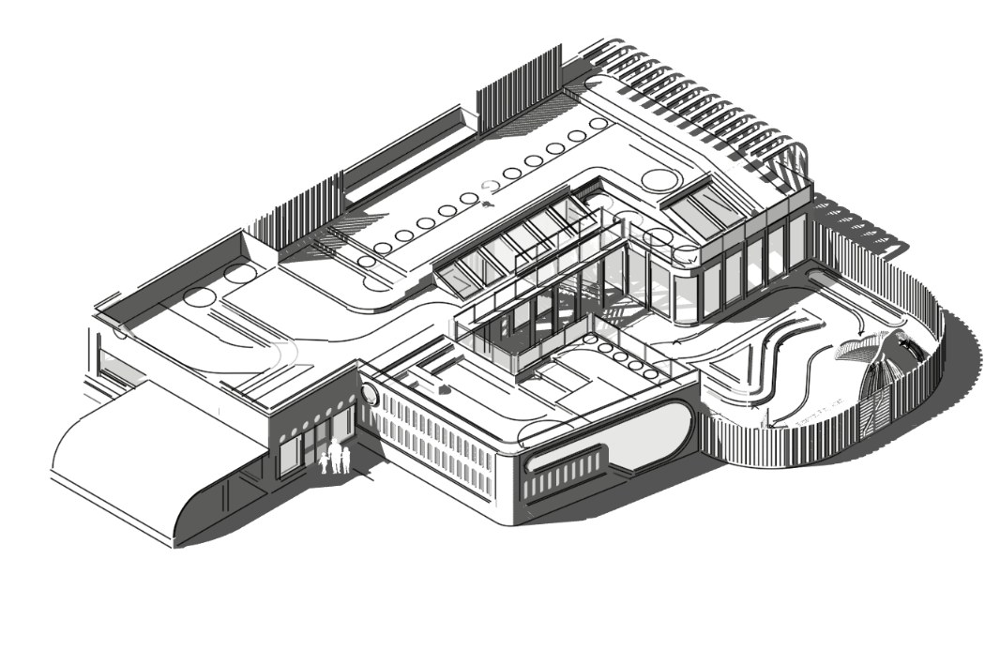
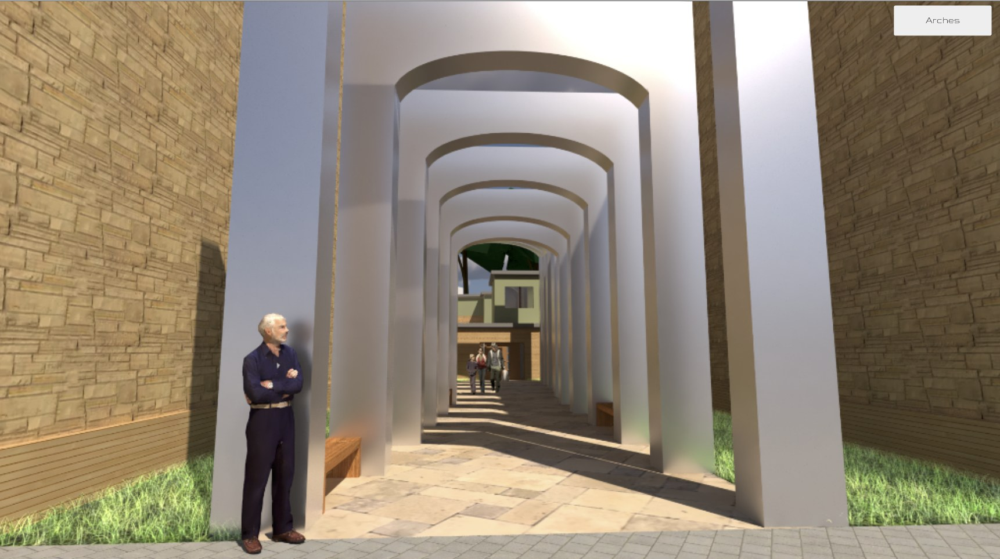
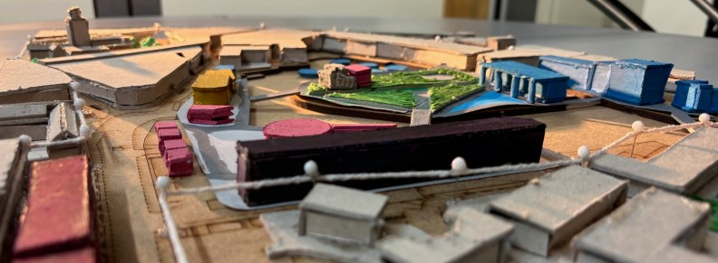

Selected Work
Projects

Major Project · Portsmouth · 2026
The Berm / Meridian Building
A civic maritime hub on Portsmouth's southern waterfront, designed to give back more than it takes. Three marine environmental charities (Blue Marine Foundation, the Marine Conservation Society, and Hampshire & Isle of Wight Wildlife Trust) occupy public galleries set alongside a shared research workshop, wet lab, and internal dock, so visitors can observe active research directly. A restaurant, cafe, lecture theatre, and residential apartments complete a building that reads as landscape before it reads as architecture.

November 2024
Barnsbury Park Nursery
A community nursery exploring child-centred spatial design within an existing urban park, balancing shelter, openness, and the scale of young users.

May 2025
Refugee Hub
A community centre providing shelter, shared space, and social infrastructure for displaced communities - architecture grounded in dignity and belonging.

March 2026
Old Portsmouth
Phase 1 of the major project, completed as a team exercise. Taking a leadership role, I interpreted the brief, organised the group's workflow, and guided key design decisions across a masterplan for Old Portsmouth, proposing selective removals to release the waterfront for public use. The work directly informed the solo Phase 2 building design.